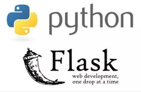

PRELIMINAIRES¶
BESOIN FONCTIONNEL du/des clients¶
DASHBOARD¶
Panel 1: Distribution statistique¶
PAS DE FOURNISSEUR SELECTIONNE
- BAR CHART Réparttion des L.O. par Fournisseur
- KPI Nombre et distribution des L.O. par types
- SUNBURST Actif - Non actif vs. Type
FOURNISSEUR SELECTIONNE
- PIE CHART Réparttion par 'Types'
- KPI Nombre et distribution des L.O. par types
- PIE CHART Répartition Actif - Non actif'
Panel 2: Mots les plus fréquents¶
Pour introduire l’extraction automatique de mots clés,
PAS DE FOURNISSEUR SELECTIONNE
FOURNISSEUR SELECTIONNE
- WORDCLOUD + BAR CHART Mots les plus fréquents (en dehors des "stopwords")
- SPECIAL FEATURE permettant d'ajouter "X" mots les plus fréquents aux "stopwords" et d'en voir l'impact sur les 2 visualisations précédentes
Panel 3: Score de “pertinence” des Tiitres¶
Après extraction automatique des mots clés par TF-IDF (cf. bientôt) et pour TOUS les Learning Objects (fr) sélectionnables un à un
PAS DE FOURNISSEUR SELECTIONNE
FOURNISSEUR SELECTIONNE
- LED DISPLAY Décompte des L.O. + L.O. actifs + Score Moyen de "Pertinence"
- FACE/FACE Mots du Titre face aux Mots-ckés extraits automatiquement
CLASSIFICATION AUTOMATIQUE des LEARNING OBJECTS¶
- Catégorie: MATIERE DE LA FORMATION PARENTt"
- Catégorie: MATIERES DE LA FOR%ATION"
(Cf. bientôt)
CHOIX des TECHNOLOGIES¶
Module base de données¶
mySQL car bases de données relationnelles il y aura:
LA référence
déjà installé sur le matériel.
d’interface facilement avec Python
mysql-server est installé sur un serveur personnel Apache2.0
Module Entraînement¶
SciKit Learn
pour le Machine Learning classique

TensorFlow + Keras
pour le Deep Learning
Module application¶
Flask
simple
modulable (login, monitoring…) et
facilemet deployable
Dash
complet et
customizable